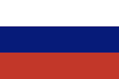

Россия
Флаг России
Гимн России
Россия — трансконтинентальное государство, расположенное на востоке Европы и на севере Азии. Занимая около территории Евразии и всей земной суши, является крупнейшим в мире государством по территории. Европейская часть страны (около 23 % площади) включает территории к западу от Уральских гор (границу условно проводят по восточному подножию гор Урала и по Кумо-Манычской впадине; реже — по водоразделу Большого Кавказа. Азиатская часть России, занимающая большую часть территорий (около 77 % площади), лежит к востоку от Урала и называется также Сибирью (однако точное определение границ Сибири является вопросом спорным) и Дальним Востоком. Спорным вопросом также является расположение владений России в третьей части света — Америке. Так, Командорские острова могут считаться продолжением Алеутской гряды, которая находится в Америке
Крайняя северная точка России — мыс Флигели на острове Рудольфа архипелага Земля Франца-Иосифа (81°51′ с. ш.), крайняя восточная точка — остров Ратманова в Беринговом проливе (западный из двух островов Диомида, 169°0′ з. д.). Крайние северная и восточная материковые точки России: мыс Челюскина на полуострове Таймыр (77°43′ с. ш.) и мыс Дежнёва на Чукотке (169°39′ з. д.). Данные крайние точки одновременно являются и соответствующими крайними точками Евразии. Крайняя южная точка России (41°11′ с. ш.) находится к юго-западу от горы Базардюзю, на границе Дагестана с Азербайджаном. Крайняя западная точка лежит в Калининградской области под 19°38′ в. д., на Балтийской косе Гданьского залива Балтийского моря; но Калининградская область является эксклавом, а основная территория России начинается восточнее, под 27°17′ в. д., на берегу реки Педедзе в Псковской области на границе с Эстонией. Таким образом, протяжённость территории России с севера на юг превышает 4000 км, с запада на восток — приближается к 10000 км. Площадь составляет 17 125 191 км2 (чуть меньше континента Южная Америка), причём на европейскую часть приходится около 3 960 000 км² (23 % всей территории), а остальные 13 100 000 км2 — на азиатскую (77 % всей территории). Таким образом, в обеих частях света Россия является крупнейшим по территории государством.
Географический центр России находится на территории Красноярского края, у юго-восточного берега озера Виви.
Общая протяжённость границ России — 60 933 км (из них 38 808 км — морские границы); границы России на севере и на востоке — морские, на юге и на западе — в основном сухопутные. Страна имеет сухопутные границы с Казахстаном (7598,6 км), Китаем (4209,3 км), Монголией (3485 км), Украиной (2245,8 км), Финляндией (1325,8 км), Белоруссией (1239 км), Абхазией (245,0 км), Южной Осетией (74,0 км)[14][15][16], Грузией (561,0 км без учёта Абхазии и Южной Осетии, с ними — 879,9 км), Эстонией (466,8 км), Азербайджаном (350 км), Литвой (288,4 км), Латвией (270,5 км), Польшей (236,3 км), Норвегией (219,1 км), КНДР (39,4 км); морские границы с Японией (194,3 км) и США (49 км).
Несмотря на то, что Россия по площади является крупнейшей страной мира, климатические и почвенные условия на большей части её территории не благоприятствуют ведению сельского хозяйства. В силу своей огромной площади Россия — страна природных контрастов: средние температуры самого тёплого месяца колеблются от +1 °C в заполярных районах до +25 °C на Прикаспийской низменности, самого холодного месяца — от +6 °C на Черноморском побережье до −50 °C в северо-восточной Сибири:51.
В России находятся самое глубокое озеро мира (Байкал), длиннейшая река Европы (Волга) и наибольшее озеро Европы (Ладожское), полюс холода Северного полушария (Верхоянск / Оймякон), а также высочайшая вершина Европы (Эльбрус). Основная часть России лежит между 40° с. ш. и 70°
Европейская часть России расположена на Восточно-Европейской платформе. В её основе залегают магматические и метаморфические породы докембрия. Территория между Уральскими горами и рекой Енисей занята молодой Западно-Сибирской платформой. Восточнее Енисея находится древняя Сибирская платформа, простирающаяся до реки Лены и соответствующая, в основном, Средне-Сибирскому плоскогорью. В краевых частях платформ имеются залежи нефти, природного газа, угля. К складчатым областям России принадлежат Балтийский щит, Урал, Алтай, Урало-Монгольский эпипалеозойский складчатый пояс, северо-западную часть Тихоокеанского складчатого пояса и небольшой отрезок внешней зоны Средиземноморского складчатого пояса. Самые высокие горы Кавказ приурочены к более молодым складчатым областям. В складчатых областях находятся основные запасы металлических руд.
Сибирская платформа имеет эпиархейский возраст. С чехлом Сибирской платформы связаны крупнейшие в России залежи каменного угля, каменных и калийных солей, нефти и газа, с трапповыми интрузиями — медно-никелевые месторождения Норильска, а с кимберлитовой трубкой — алмазы.
В строении Урало-Монгольского эпипалеозойского складчатого пояса, разделяющего 2 древние платформы, выделяются области рифейской, байкальской, салаирской, каледонской и герцинской складчатости. Енисей-Саяно-Байкальская область рифейской и байкальской складчатости обрамляет Сибирскую платформу. Вдоль границы с Восточно-Европейской платформой располагается Предуральский краевой прогиб, заполненный пермскими толщами с месторождениями каменного угля на севере и калийных солей в средней части прогиба (см. Урал).
Границы
Тихоокеанский складчатый пояс на территории России представлен крайней северо-западной частью, в пределах которой расположены древние дорифейские массивы, области мезозойской и кайнозойской складчатости и современные тектонически активные зоны. В Верхояно-Чукотской области известны месторождения золота, связанные с юрскими и нижнемеловых гранитными интрузиями, а также олова, вольфрама и ртути. Большие залежи каменного угля заключены в молассах Предверхоянского прогиба и Зырянской впадины.
Западно-Камчатская складчатая система является терригенным геосинклинальным комплексом верхнего мела, который наложился на гранит-гнейсовый и сланцево-базитовый фундамент, а после складчатости оказался перекрытым палеоген-неогеновыми породами. Восточная зона характеризуется наложенным современным вулканизмом (28 действующих вулканов).
Курильская островная дуга, состоящая из Большой и Малой гряд, насчитывает 39 действующих вулканов, и составлена меловыми и четвертичными вулканогенно-осадочными и вулканогенными образованиями. Дуга раздроблена системой молодых поперечных грабенов, а перед её фронтом, как и перед восточной частью Камчатки, располагается глубоководный жёлоб.
Сахалинская кайнозойская складчатая область разделяется на Восточную и Западную зоны, разделённые Центрально-Сахалинским грабеном. С Северо-Сахалинской впадиной связаны месторождения нефти и газа, а с горными породами среднего миоцена на острове связаны залежи каменного угля.
Древнее государство
Традиционно, начиная с русской летописи «Повести временных лет» начала XII века и до настоящего времени, возникновение Русского государства относится к 862 году, когда, согласно русским летописям, славянские и финно-угорские племена призвали на княжение варягов во главе с Рюриком в Ладогу или Новгород и другие города. Некоторые историки относят начало Русского государства к другому времени или привязывают к другому событию (например, к 882 году, когда князь Олег захватил Киев, объединив два центра Руси).
Государство Рюрика включало в себя территории южного Приладожья (Старая Ладога, Новгород) и верхней Волги (Белоозеро, Ростов). Основное население составляли славяне (словене и кривичи), финно-угорские племена (весь, меря, чудь), военную аристократию составляли варяги.
В 882 году преемник Рюрика новгородский князь Олег присоединил к своим владениям южный центр восточных славян, сделав главный город полян — Киев — своей столицей; затем он совершил поход на Византию.
В историографии объединение северного и южного центров под властью Рюриковичей рассматривается как окончание процесса формирования Древнерусского государства.
Расширение государства на юг привело к столкновению с могущественной Хазарией, центр которой располагался на нижней Волге. Князь Святослав в 965 году нанёс хазарам сокрушительное поражение. В результате военных походов и дипломатических усилий киевских правителей в состав нового государства вошли земли всех восточнославянских, а также некоторых финно-угорских, балтских, тюрко- и ираноязычных племён.
Параллельно шёл процесс славянской колонизации Волго-Окского междуречья. Древняя Русь являлась одним из крупнейших государственных образований Европы, боролась за доминирующее положение в Восточной Европе и Черноморском регионе с Византийской империей.
При князе Владимире Святославиче в 988 году Русь приняла христианство. Князь Ярослав Мудрый утвердил первый общегосударственный свод законов — Русскую Правду. В 1132 году после смерти киевского князя Мстислава Владимировича начался распад единого государства на ряд самостоятельных: Новгородская земля, Владимиро-Суздальское княжество, Волынское княжество, Черниговское княжество, Рязанское княжество, Полоцкое княжество и другие. Киев оставался объектом борьбы между наиболее сильными княжескими ветвями, а Киевская земля считалась коллективным владением Рюриковичей.
Древнерусское государство обладало достаточно развитым для своего времени государственным аппаратом.